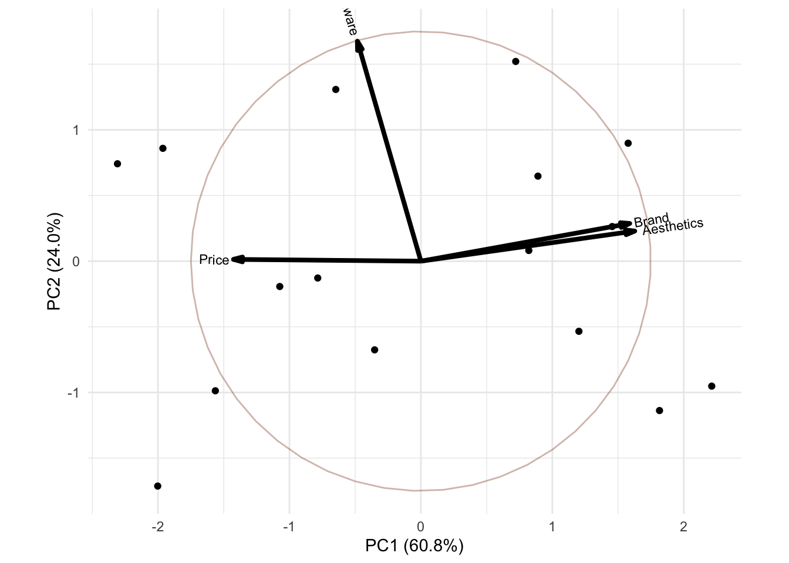
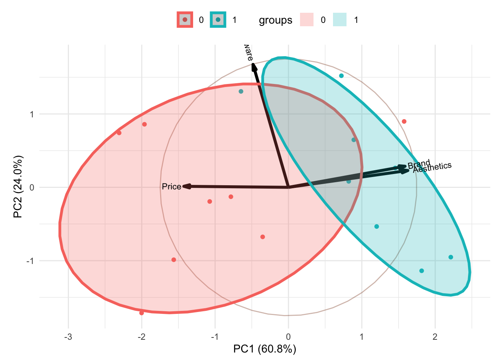
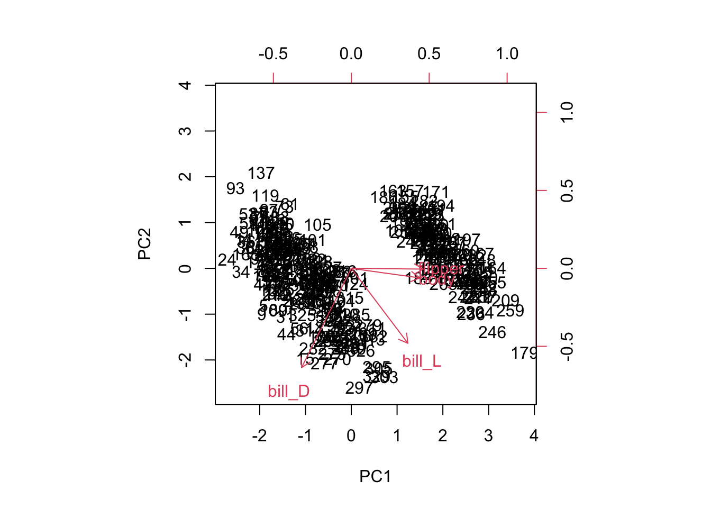
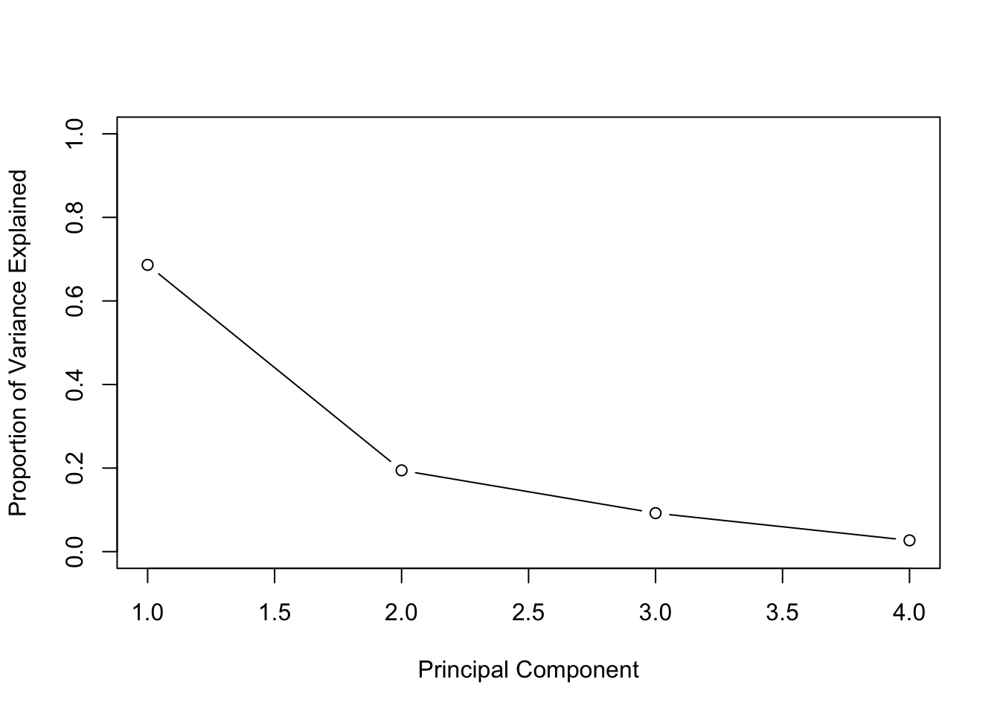
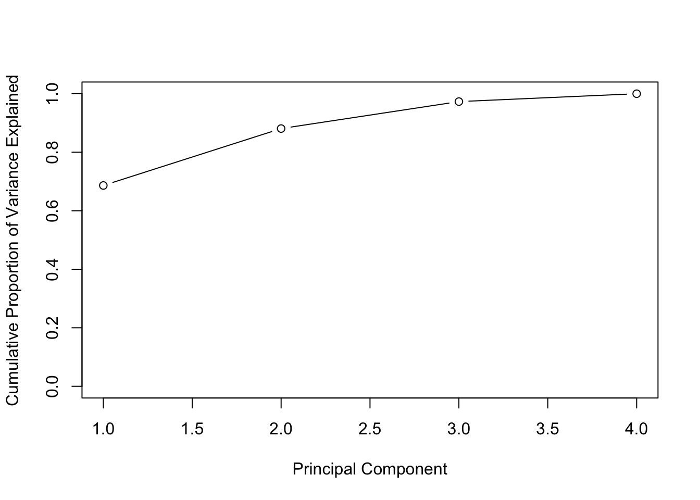
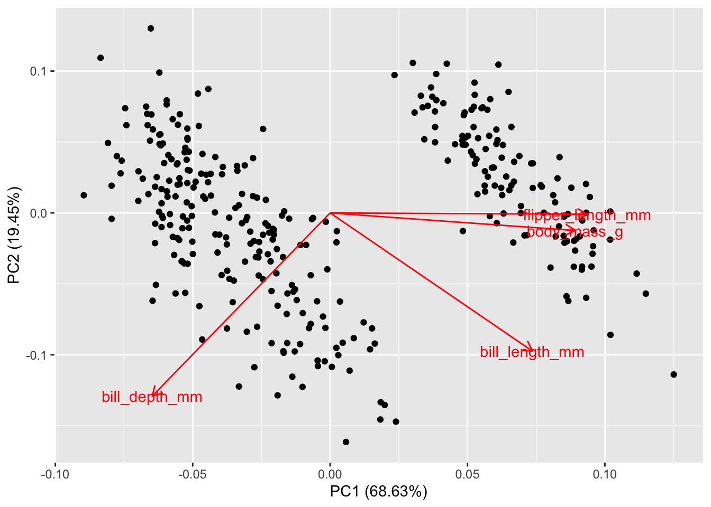
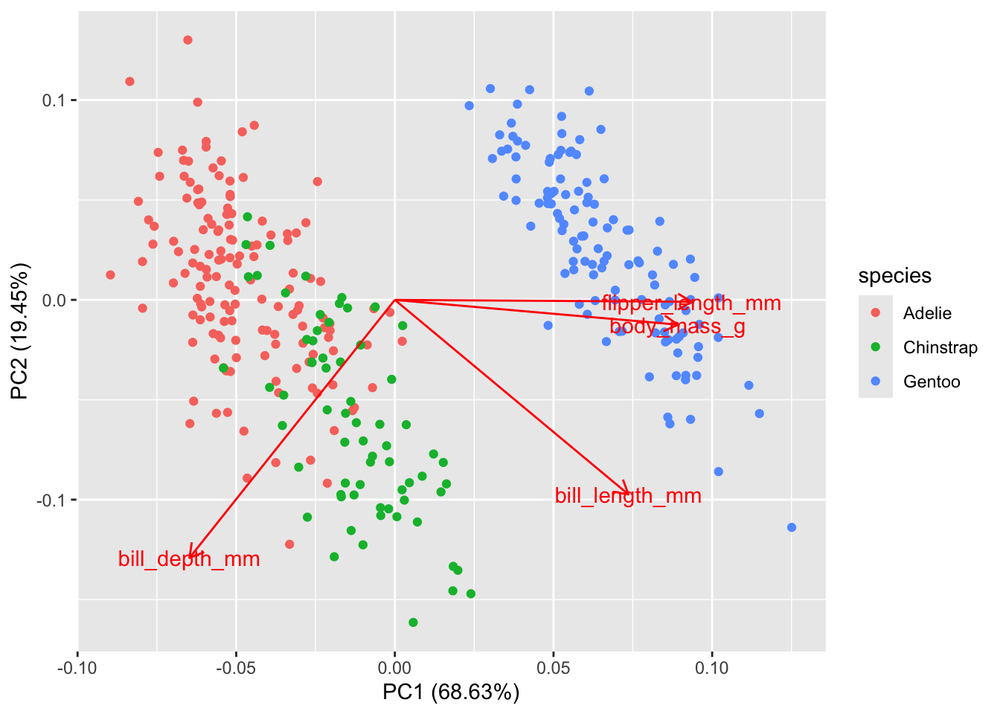
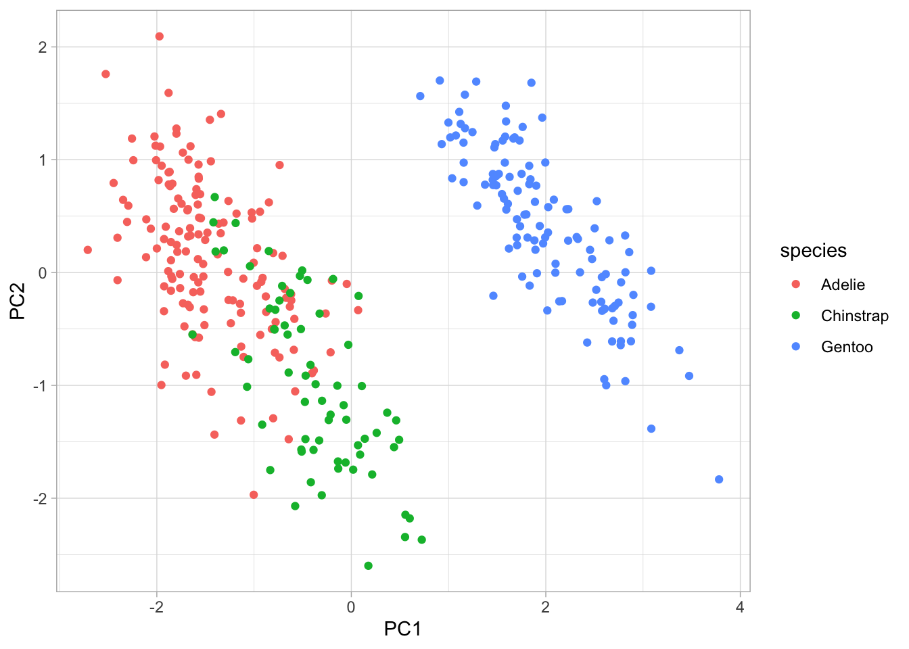
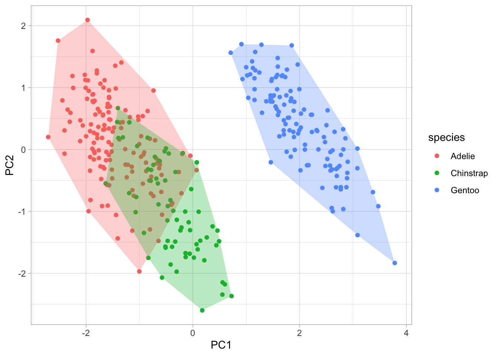
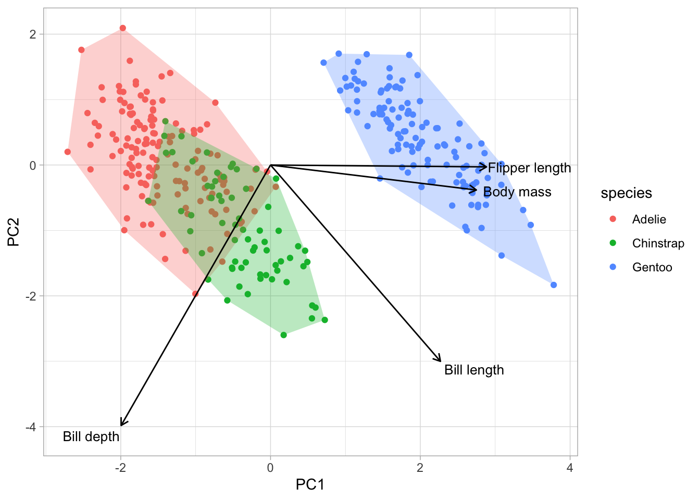

library(tibble)
Price <- c(6,7,6,5,7,6,5,6,3,1,2,5,2,3,1,2)
Software <- c(5,3,4,7,7,4,7,5,5,3,6,7,4,5,6,3)
Aesthetics <- c(3,2,4,1,5,2,2,4,6,7,6,7,5,6,5,7)
Brand <- c(4,2,5,3,5,3,1,4,7,5,7,6,6,5,5,7)
buy_computer <- tibble(Price, Software, Aesthetics, Brand)Principal Component Analysis
PC Regression
Some of the most notable advantages of performing PCA are the following:
- Dimensionality reduction
- Avoidance of multicollinearity between predictors.
- Variables are orthogonal, so including, say, PC9 in the model has no bearing on, say, PC3
- Variables are ordered in terms of standard error. Thus, they also tend to be ordered in terms of statistical significance
- Overfitting mitigation
With principal components regression, the new transformed variables (the principal components) are calculated in a totally unsupervised way:
- the response Y is not used to help determine the principal component directions).
- the response does not supervise the identification of the principal components.
- PCR just looks at the x variables
The PCA method can dramatically improve estimation and insight in problems where multicollinearity is a large problem – as well as aid in detecting it.
Very simple PCA example
Let’s say we asked 16 participants four questions (on a 7 scale) about what they care about when choosing a new computer, and got the results like this:
Let’s go on with the PCA. prcomp is part of the stats package.
pca_buycomputer <- prcomp(buy_computer, scale = TRUE, center = TRUE)
names(pca_buycomputer)[1] "sdev" "rotation" "center" "scale" "x" print(pca_buycomputer)Standard deviations (1, .., p=4):
[1] 1.5589391 0.9804092 0.6816673 0.3792578
Rotation (n x k) = (4 x 4):
PC1 PC2 PC3 PC4
Price -0.5229138 0.00807487 0.8483525 -0.08242604
Software -0.1771390 0.97675554 -0.1198660 -0.01423081
Aesthetics 0.5965260 0.13369503 0.2950727 -0.73431229
Brand 0.5825287 0.16735905 0.4229212 0.67363855summary(pca_buycomputer)Importance of components:
PC1 PC2 PC3 PC4
Standard deviation 1.5589 0.9804 0.6817 0.37926
Proportion of Variance 0.6076 0.2403 0.1162 0.03596
Cumulative Proportion 0.6076 0.8479 0.9640 1.00000library(ggbiplot)Loading required package: ggplot2g <- ggbiplot(pca_buycomputer, obs.scale = 1, var.scale = 1,
ellipse = TRUE, circle = TRUE)
g <- g + scale_color_discrete(name = '')
g <- g + theme_minimal() +
theme(legend.direction = 'horizontal',
legend.position = 'top')
print(g)
Remember that one of the disadventage of PCA is how difficult it is to interpret the model (ie. what does the PC1 is representing, what does PC2 is representing, etc.). The biplot graph help somehow to overcome that.
In the above graph, one can see that Brandand Aesthetic explain most of the variance in the new predictor PC1 while Software explain most of the variance in the new predictor PC2. It is also to be noted that Brand and Aesthetic are quite highly correlated.
Once you have done the analysis with PCA, you may want to look into whether the new variables can predict some phenomena well, i.e. whether features can classify the data well. Let’s say you have asked the participants one more thing, which OS they are using (Windows or Mac) in your survey, and the results are like this:
OS <- c(0,0,0,0,1,0,0,0,1,1,0,1,1,1,1,1)Let’s first create a biplot with this new variable shown:
g <- ggbiplot(pca_buycomputer, obs.scale = 1, var.scale = 1, groups = as.character(OS),
ellipse = TRUE, circle = TRUE)
g <- g + scale_color_discrete(name = '')
g <- g + theme_minimal() +
theme(legend.direction = 'horizontal',
legend.position = 'top')
print(g)
What do you note? Let’s now test the model (recall this is a toy example so we won’t bother with train-test split):
model1 <- glm(OS ~ pca_buycomputer$x[,1] + pca_buycomputer$x[,2], family = binomial)
summary(model1)
Call:
glm(formula = OS ~ pca_buycomputer$x[, 1] + pca_buycomputer$x[,
2], family = binomial)
Coefficients:
Estimate Std. Error z value Pr(>|z|)
(Intercept) -0.2138 0.7993 -0.268 0.7891
pca_buycomputer$x[, 1] 1.5227 0.6621 2.300 0.0215 *
pca_buycomputer$x[, 2] 0.7337 0.9234 0.795 0.4269
---
Signif. codes: 0 '***' 0.001 '**' 0.01 '*' 0.05 '.' 0.1 ' ' 1
(Dispersion parameter for binomial family taken to be 1)
Null deviance: 22.181 on 15 degrees of freedom
Residual deviance: 11.338 on 13 degrees of freedom
AIC: 17.338
Number of Fisher Scoring iterations: 5Let’s see how well this model predicts the kind of OS. You can use fitted() function to see the prediction.
fitted(model1) 1 2 3 4 5 6
0.114201733 0.009372181 0.217716320 0.066009817 0.440016243 0.031640529
7 8 9 10 11 12
0.036189119 0.175766013 0.906761064 0.855587371 0.950088045 0.888272270
13 14 15 16
0.781098710 0.757499202 0.842557931 0.927223453 These values represent the probabilities of being 1. For example, we can expect 11% chance that Participant 1 is using OS 1 based on the variable derived by PCA. Thus, in this case, Participant 1 is more likely to be using OS 0, which agrees with the survey response. In this way, PCA can be used with regression models for calculating the probability of a phenomenon or making a prediction.
Penguins
Here we use the Penguin data set which includes variables on the penguin body features. Import this data and for simplicity, remove the rows that include NA’s. Run PCA on the following four predictors:
bill_length_mmbill_depth_mmflipper_length_mmbody_mass_g
Interpret the results using
- with a biplot and explain observed patterns
- in terms of proportion variance explained (use a scree plot and a cumulative proportion plot)
We start with the base R way
library(readr) # install if not in your library
penguins = read_csv("penguins.csv", col_names = T) New names:
Rows: 344 Columns: 9
── Column specification
──────────────────────────────────────────────────────── Delimiter: "," chr
(3): species, island, sex dbl (6): ...1, bill_length_mm, bill_depth_mm,
flipper_length_mm, body_mass_g...
ℹ Use `spec()` to retrieve the full column specification for this data. ℹ
Specify the column types or set `show_col_types = FALSE` to quiet this message.
• `` -> `...1`head(penguins)# A tibble: 6 × 9
...1 species island bill_length_mm bill_depth_mm flipper_length_mm
<dbl> <chr> <chr> <dbl> <dbl> <dbl>
1 0 Adelie Torgersen 39.1 18.7 181
2 1 Adelie Torgersen 39.5 17.4 186
3 2 Adelie Torgersen 40.3 18 195
4 3 Adelie Torgersen NA NA NA
5 4 Adelie Torgersen 36.7 19.3 193
6 5 Adelie Torgersen 39.3 20.6 190
# ℹ 3 more variables: body_mass_g <dbl>, sex <chr>, year <dbl>tail(penguins)# A tibble: 6 × 9
...1 species island bill_length_mm bill_depth_mm flipper_length_mm
<dbl> <chr> <chr> <dbl> <dbl> <dbl>
1 62 Chinstrap Dream 45.7 17 195
2 63 Chinstrap Dream 55.8 19.8 207
3 64 Chinstrap Dream 43.5 18.1 202
4 65 Chinstrap Dream 49.6 18.2 193
5 66 Chinstrap Dream 50.8 19 210
6 67 Chinstrap Dream 50.2 18.7 198
# ℹ 3 more variables: body_mass_g <dbl>, sex <chr>, year <dbl>dim(penguins)[1] 344 9df <- na.omit(penguins)
dim(df)[1] 333 9reduced_df <- cbind(df$bill_length_mm, df$bill_depth_mm, df$flipper_length_mm, df$body_mass_g)
colnames(reduced_df) <- c("bill_L", "bill_D", "flipper", "body")
penguin_pca = prcomp(reduced_df, scale = TRUE)
biplot(penguin_pca, scale = 0)
get_PVE = function(pca_out) {
pca_out$sdev ^ 2 / sum(pca_out$sdev ^ 2)
}
pve = get_PVE(penguin_pca)
pve[1] 0.68633893 0.19452929 0.09216063 0.02697115plot(
pve,
xlab = "Principal Component",
ylab = "Proportion of Variance Explained",
ylim = c(0, 1),
type = 'b'
)
cumsum(pve)[1] 0.6863389 0.8808682 0.9730289 1.0000000plot(
cumsum(pve),
xlab = "Principal Component",
ylab = "Cumulative Proportion of Variance Explained",
ylim = c(0, 1),
type = 'b'
)
Let’s now do it the Tidy way
Data prepration
library(readr)
library(tidyverse)
library(ggfortify)
penguins = read_csv("penguins.csv", col_names = T)
head(penguins)# A tibble: 6 × 9
...1 species island bill_length_mm bill_depth_mm flipper_length_mm
<dbl> <chr> <chr> <dbl> <dbl> <dbl>
1 0 Adelie Torgersen 39.1 18.7 181
2 1 Adelie Torgersen 39.5 17.4 186
3 2 Adelie Torgersen 40.3 18 195
4 3 Adelie Torgersen NA NA NA
5 4 Adelie Torgersen 36.7 19.3 193
6 5 Adelie Torgersen 39.3 20.6 190
# ℹ 3 more variables: body_mass_g <dbl>, sex <chr>, year <dbl>penguins <-
penguins %>%
drop_na()
penguins[1] <- NULL # remove first column
head(penguins)# A tibble: 6 × 8
species island bill_length_mm bill_depth_mm flipper_length_mm body_mass_g
<chr> <chr> <dbl> <dbl> <dbl> <dbl>
1 Adelie Torgersen 39.1 18.7 181 3750
2 Adelie Torgersen 39.5 17.4 186 3800
3 Adelie Torgersen 40.3 18 195 3250
4 Adelie Torgersen 36.7 19.3 193 3450
5 Adelie Torgersen 39.3 20.6 190 3650
6 Adelie Torgersen 38.9 17.8 181 3625
# ℹ 2 more variables: sex <chr>, year <dbl>str(penguins)tibble [333 × 8] (S3: tbl_df/tbl/data.frame)
$ species : chr [1:333] "Adelie" "Adelie" "Adelie" "Adelie" ...
$ island : chr [1:333] "Torgersen" "Torgersen" "Torgersen" "Torgersen" ...
$ bill_length_mm : num [1:333] 39.1 39.5 40.3 36.7 39.3 38.9 39.2 41.1 38.6 34.6 ...
$ bill_depth_mm : num [1:333] 18.7 17.4 18 19.3 20.6 17.8 19.6 17.6 21.2 21.1 ...
$ flipper_length_mm: num [1:333] 181 186 195 193 190 181 195 182 191 198 ...
$ body_mass_g : num [1:333] 3750 3800 3250 3450 3650 ...
$ sex : chr [1:333] "male" "female" "female" "female" ...
$ year : num [1:333] 2007 2007 2007 2007 2007 ...Load some packages:
library(tidyverse)
library(ggfortify)When you’re running a PCA, the variables that you are collapsing need to be continuous. If you don’t have all continuous variables, then you’ll need to consider a different ordination method (e.g., Jaccard similarity indices use a binary presence/absence matrix). Similarly to running linear models (and its variations), it’s a good idea to scale and center our variables. Luckily, we can do this inside the prcomp() function.
pca_values <-
prcomp(penguins[, c(3:6)], center = TRUE, scale = TRUE)
summary(pca_values)Importance of components:
PC1 PC2 PC3 PC4
Standard deviation 1.6569 0.8821 0.60716 0.32846
Proportion of Variance 0.6863 0.1945 0.09216 0.02697
Cumulative Proportion 0.6863 0.8809 0.97303 1.00000The number of principal components will always equal the number of variables you’re collapsing - in our case, we have four (i.e., PC1, PC2, PC3, PC4). The table that is presented is telling you how well the PCA fits your data. Typically, we assess PCA “fit” based on how much of the variance can be explained on a single axis. Here, the proportion of variance on the first axis (PC1) is nearly 70%, which is great! The last row is describing the cumulative proportion, which is just the sum of the proportion of variance explained by each additional axis (the sum of all axes will equal 1.00).
The numbers are great (and you’ll have to report them in your results), but let’s visualize this. For a quick a dirty PCA plot, we can just use the ggfortify::autoplot() function. This produces a ggplot object, so you can still manipulate it quite a bit, but we’ll also provide code below so you can make your own.
autoplot(pca_values, loadings = TRUE, loadings.label = TRUE)
The interpretation: arrows of similar length and direction are more correlated to one another than arrows that are perpendicular to one another. If two arrows are pointing in the exact opposite direction, they’re negatively correlated. You can double-check all this with a correlation matrix, and you’ll see that flipper_length_mm and body_mass_g are correlated (r = 0.87) and their arrows are nearly parallel!
The direction and magnitude of each arrow is also telling you how much of that variable loads on that axis. Let’s take bill_depth_mm as an example. Here we can see that decreasing values of PC1 equate to larger values of bill_depth_mm because its eigenvector is pointing towards the left side of the plot. We also see a similar pattern with PC2, where decreasing values of PC2 = increasing values of bill_depth_mm. Conversely, increasing values of PC1 would equate to increasing values of flipper_length_mm, body_mass_g, and bill_length_mm.
The clustering of points matters as well. Points that are clustering near each other are more similar than those that are further apart. This is easily visualized if we colour the points; as an example, we’ll colour the points by species:
autoplot(pca_values, loadings = TRUE, loadings.label = TRUE,
data = penguins, colour = 'species')
So now we can see that the Adelie and Chinstrap points cluster, but they also overlap quite a bit. In this space, you would interpret them as more similar to one another. The Gentoo penguins are way to the right and don’t overlap with the other two species at all, so we would say that they are very different in terms of bill depth, bill length, flipper length, and body mass. Of course we can see this in the plot, but if you want to test clustering, then we’ll have to do that in a separate analysis.
Want to make even prettier plots?
Start with basic plot:
pca_points <-
# first convert the pca results to a tibble
as_tibble(pca_values$x) %>%
# now we'll add the penguins data
bind_cols(penguins)
head(pca_points)# A tibble: 6 × 12
PC1 PC2 PC3 PC4 species island bill_length_mm bill_depth_mm
<dbl> <dbl> <dbl> <dbl> <chr> <chr> <dbl> <dbl>
1 -1.85 -0.0320 0.235 0.528 Adelie Torgersen 39.1 18.7
2 -1.31 0.443 0.0274 0.401 Adelie Torgersen 39.5 17.4
3 -1.37 0.161 -0.189 -0.528 Adelie Torgersen 40.3 18
4 -1.88 0.0123 0.628 -0.472 Adelie Torgersen 36.7 19.3
5 -1.92 -0.816 0.700 -0.196 Adelie Torgersen 39.3 20.6
6 -1.77 0.366 -0.0284 0.505 Adelie Torgersen 38.9 17.8
# ℹ 4 more variables: flipper_length_mm <dbl>, body_mass_g <dbl>, sex <chr>,
# year <dbl>basic_plot <-
ggplot(pca_points, aes(x = PC1, y = PC2)) +
geom_point(aes(colour = species)) +
theme_light()
basic_plot
And then pimp it up using chull():
# first create a dataframe to extract the convex hull points
pca_hull <-
pca_points %>%
group_by(species) %>%
slice(chull(PC1, PC2))
# now, we'll just continue to build on our ggplot object
chull_plot <-
basic_plot +
geom_polygon(data = pca_hull,
aes(fill = as.factor(species)),
alpha = 0.3,
show.legend = FALSE)
chull_plot
We’re almost there! Lastly, let’s put the eigenvectors (i.e., the arrows) back on the plot. First, we’ll have to create another dataframe of eigenvectors and then we can throw them back onto the plot
pca_load <-
as_tibble(pca_values$rotation, rownames = 'variable') %>%
# we can rename the variables so they look nicer on the figure
mutate(variable = dplyr::recode(variable,
'bill_length_mm' = 'Bill length',
'bill_depth_mm' = 'Bill depth',
'flipper_length_mm' = 'Flipper length',
'body_mass_g' = 'Body mass'))
head(pca_load)# A tibble: 4 × 5
variable PC1 PC2 PC3 PC4
<chr> <dbl> <dbl> <dbl> <dbl>
1 Bill length 0.454 -0.600 -0.642 0.145
2 Bill depth -0.399 -0.796 0.426 -0.160
3 Flipper length 0.577 -0.00579 0.236 -0.782
4 Body mass 0.550 -0.0765 0.592 0.585chull_plot +
geom_segment(data = pca_load,
aes(x = 0, y = 0,
xend = PC1*5,
yend = PC2*5),
arrow = arrow(length = unit(1/2, 'picas'))) +
annotate('text', x = (pca_load$PC1*6), y = (pca_load$PC2*5.2),
label = pca_load$variable,
size = 3.5) 